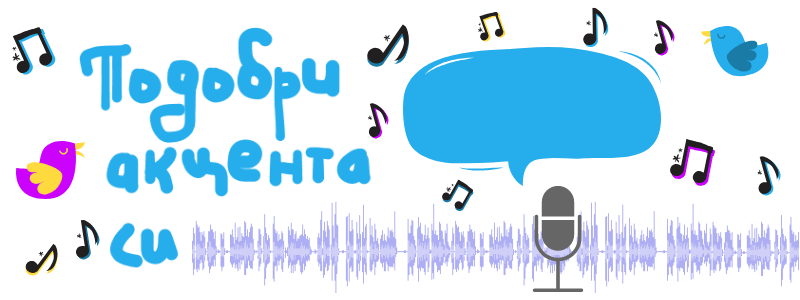

Как да подобрим акцента си
Граматиката ви е перфектна.
Речникът ви е прилично богат.
Разбирането ви е екстра.
Но все пак не се чувствате уверено да говорите на езика, който изучавате.
А скоро на посещение идва чужденец.
За щастие има няколко трика, за да говорите гладко.
Изговаряне
Най- лесно е да четете на глас, за предпочитане на по- разговорни книги като комикси или детективски романи. Репликите там се доближават най- много до ежедневната реч.
На следващото ниво, може и да се запишете с диктофон или с приложението на смартфона ви. Докато изговаряте ума ви е зает, затова не забелязва грешките, които правите. Като чуете записа ще добиете по- точна представа какво не звучи наред, за да го поправите.
За допълнителна трудност може да си поставите срок- примерно 200 думи в минута, което е с около петдесетина процента повече от средното.
По- забавно и неангажиращо е да пеете ведно с любимите си песни на целевия ви език. Вярно, че при пеенето акцентът не е изявен, но се подобрява така нареченото когнитивно владеене, от което зависи колко бързо и лесно обработвате дадена информация.
За същото помага да се опитвате да мислите на езика, а не да превеждате наум.
Важно е, защото противно на интуицията ни, ако говорим по- бавно създава впечатление, че говорим по- неправилно. Пробвайте по- бързо и се убедете!
Повторение
Най- ефективно обаче е не просто да говорите, а да имитирате говорящите вашия език.
Това става със слушане и повтаряне на реплики от видео. Може да отидете на Youtube, на сайта на TED talks, или пуснете някое DVD, натиснете бутона за пауза и опитайте максимално точно да повторите. После направете същото със следващото изречение.
Намерете някое радио или още по- добре подкаст, защото може да ги “превъртате”.
Също гледайте филми и повтаряйте някои сцени като се опитвате да имитирате не само думите, но мимиките, тона и ритъма на актьорите. Правилното изговаряне не е единственото, което ви прави да звучите по- свободно.
Ако говорите прекалено нехарактерно, пробвайте да произнасяте напосоки думи или дори типични за езика звуци. Не е нужно да има смисъл, както правят дребните дечица, когато се учат да говорят. Пробвайте най- честите възклицания. Също пробвайте с френското "r", английското “th”, арабското гърлено ح или тоналните звуци на китайския; или пък започнете с по- лесните звуци и увеличавайте постепено трудността.
Пробвайте също със скоропоговорки, за да може да свикнете с положението на езика и челюстта си със звуците на езика, който учите. Цъкнете за някои на английски, френски, немски и китайски. Ако ви трябват на друг език, потърсете tongue twisters в Google.
Друго, което помага, е да говорите с пресилен акцент. Ще се червите, защото ще се чувствате странно, но ще звучи по- естествено на носителите на езика. След известно време ще свикнете.
Практика
Разбира се нищо не може да се сравни с разговарянето с носител на езика, който учите или с някой на по- напреднало ниво.
Намерете местна среща на ентусиасти като клуба по ораторство Toastmasters или на сайта meetup.
Из интернет има също стотици сайтове, където се събират изучаващите чужди езици. Такива са busuu, italki, Conversation Exchange, Easy Language Exchange и Speaky.
Освен нови думи и често използвани изрази, така ще хванете ритъма и ще се докоснете до културата.
Ако пък сте на забутано място без много- много чужденци, друг вариант е да си намерите другарче, с което да говорите. Да кажем, колега, които също искат да подобрят езика или приятел, който го учи като хоби например.
Филъри
Дори говорителите, за които езика, който учите е майчин, имат нужда от секунда, за да съставят изречения в ума си. Така че нищо чудно да ви трябва да си поемете дъх докато говорите. За тази цел научете филъри за запълване на тишината докато си припомните някоя дума или конструкция. На чужд език ни се иска да говорим идеално и без запъване, а да учите паразитни думи може да ви се стори странно. Обаче за отсрещната страна именно липсата им би била неестествена.
Вижте някои от най- разпространените често ползвани думи на няколко популярни езика:
- английски: „well“, „you see“, „you know“, „all right“, „what do you call it“, “lets see!, "I mean", "okay", "so", "actually", "basically", "right";
- руски: “ну, “это” или “эта”, “типа”, “как бы”, “в общем”, “слышь”, “блин”;
- френски: „bah“, „eh bien“, “voyons”, „tu sais“, „comment dirais-je?“, „tiens!“;
- немски: “stimmt”, “also”, “halt”;
- испански: “o sea”, “bueno”.
Какво ще пробвате?
Какъв съвет ви е помогнал в тази борба?